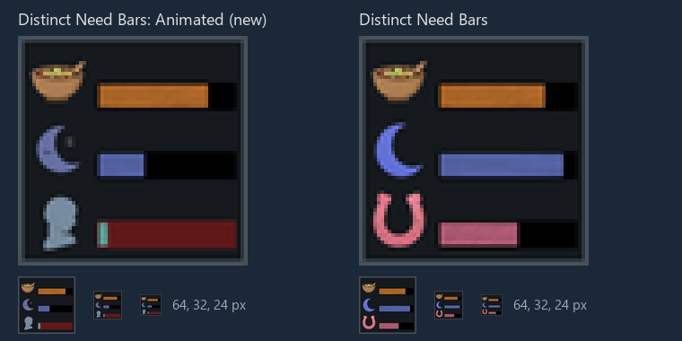
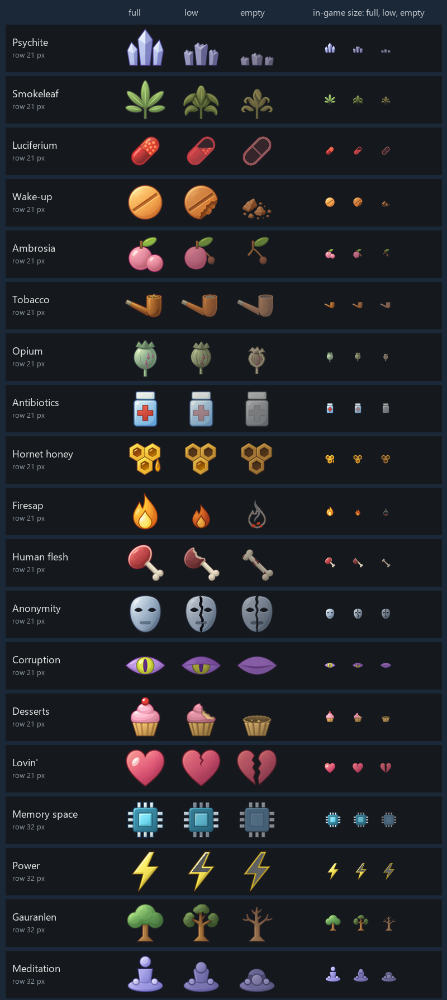
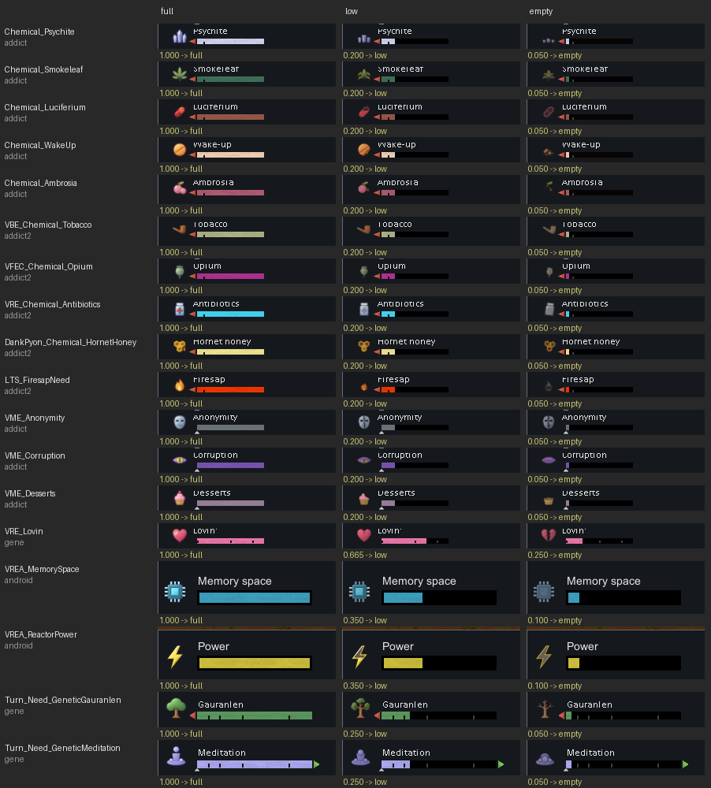
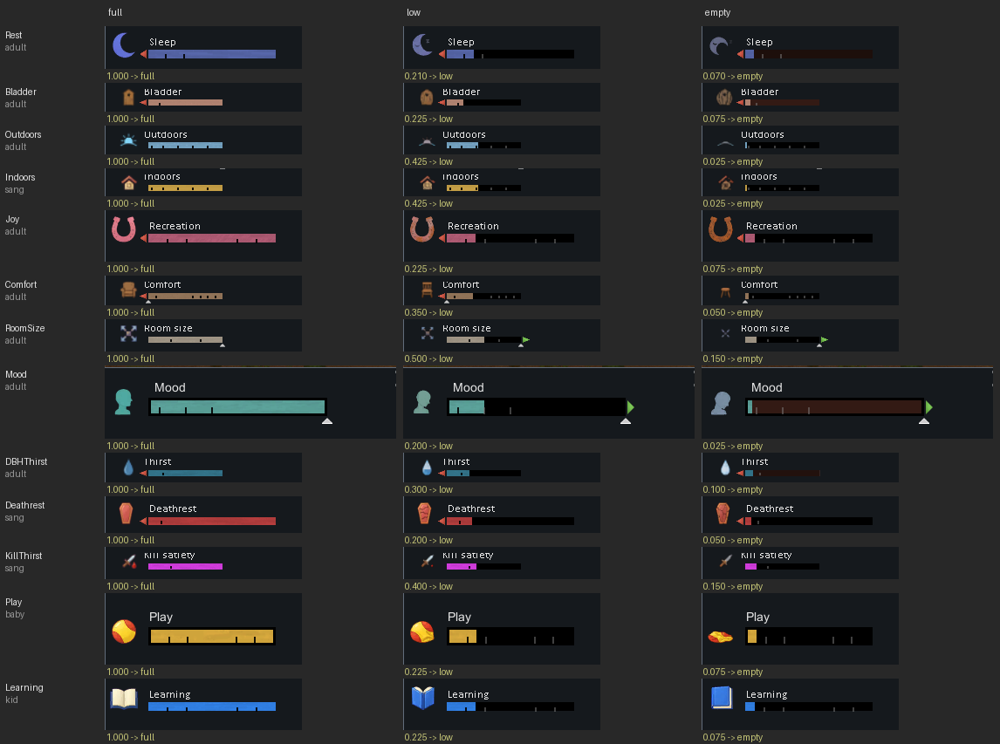

Distinct Need Bars: Animated: art to review
2026-11-04. Not linked from any Workshop page. Every picture here is in the add-on's master branch.
1. The mod-list icon (new)
Your pick, "falling": Food full, Sleep low, Mood empty with its head tilted mid-wiggle and its bar's empty part glowing red. Beside it, Distinct Need Bars' own icon, whose layout it copies. The game's mod list shows it small; the three sizes at the bottom are 64, 32 and 24 px. It goes out with the add-on's next content upload.

2. Batch 3: the 19 new needs' pictures
Your picks: the five base-game addictions and fourteen other mods' needs. Full is each need's normal icon; low and empty are the add-on's pictures. On the right, the same three at the size the Needs tab draws them (21 px on a minor row, 32 px on a major one). A blind reader named all 19 in the right order, after a second round for Antibiotics; the weakest are Anonymity's low and the empty Opium and Firesap.

3. Batch 3 as the game drew them
Each need set to full, low and empty in a real game (copy 2, RimWorld 1.6). Human flesh is missing because its mod has no 1.6 release; its pictures are in section 2.

4. Batch 2 as the game drew them
The 13 batch 2 needs in the final designs you chose (the sunset, the cracked house, the bursting door, the dozing moon and the rest), each at full, low and empty in a real game (copy 16, RimWorld 1.6).
